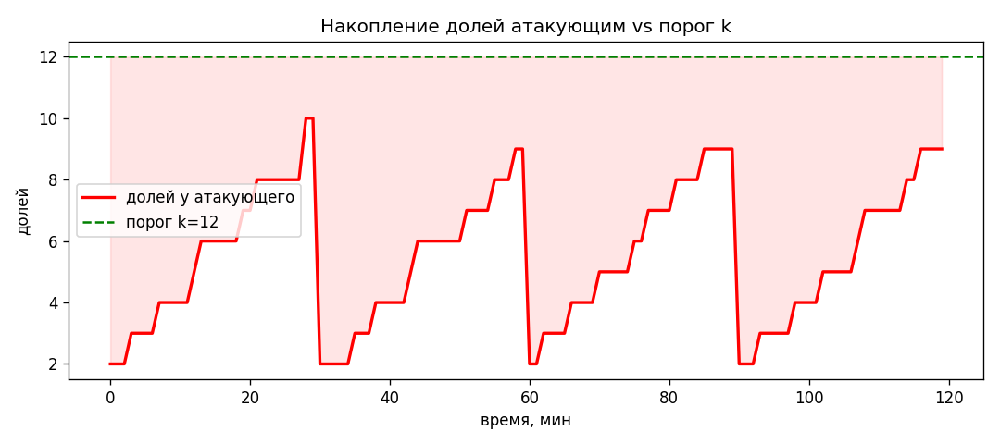
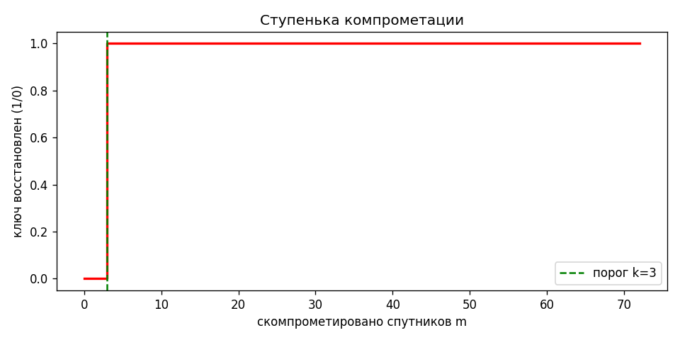
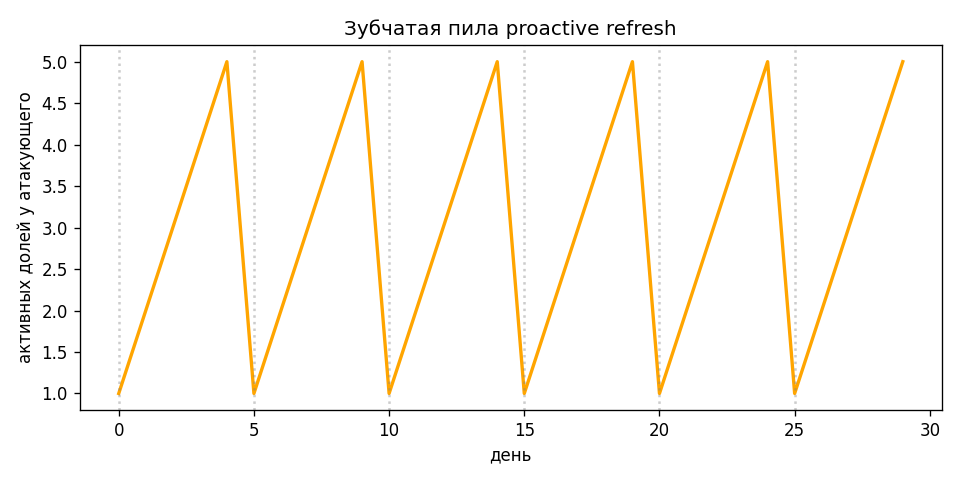
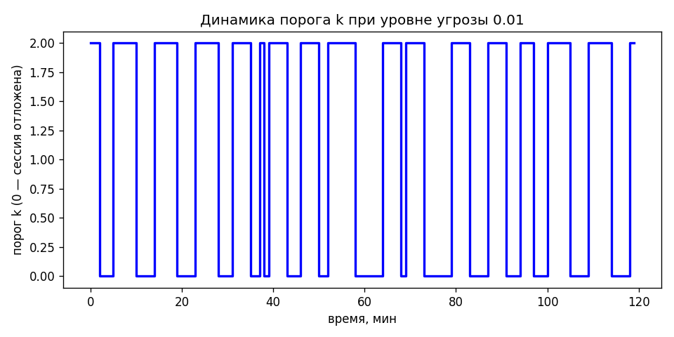
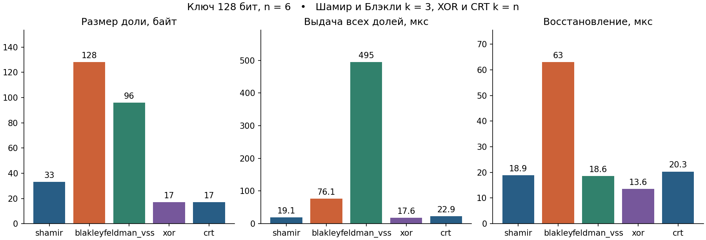
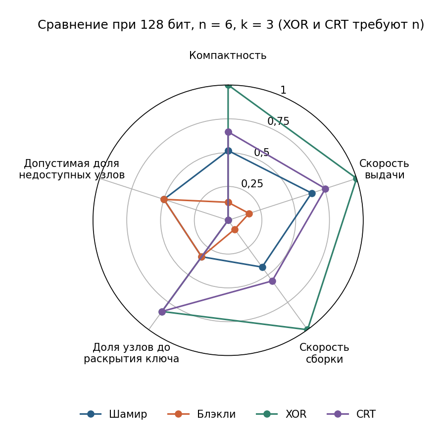

Устойчивость спутниковой связи
Орбитальная модель, пороговое управление ключами и сценарии раскрытия долей.
Сравнить исходы атак →- Длительность синтетического сценария
- 120 мин
- Доставлено пакетов
- 120 / 120
- Смен обслуживающего узла
- 26
Интерактивные визуализации
Исходы атакСравните раскрытые доли, доставку и состояние ключа в двух сценариях.
Орбиты и зона видимостиНастройте созвездие и порог. Сравните кворум станции с раскрытиями долей.
Связь наземной станцииПосмотрите кворум, смену обслуживающего спутника и результат проверки подписи.
Сравнение пяти схемСопоставьте доступность кворума на общей орбитальной трассе.
Графики


Накопление долейРаскрытые доли текущей эпохи и порог.

Граница восстановленияЗависимость восстановления ключа от числа подлинных долей.

Обновление долейСмена эпох в учебной модели накопления.

Адаптивный порогВыбор порога по видимости и заданному уровню угрозы.

Характеристики пяти схемРазмер долей и время вычислений.

Сводка бенчмаркаСравнение времени и размеров в одном сценарии.Данные
Результаты эксперимента
Орбитальный эксперимент
Фиксированный порог 3, обновление раз в 30 минут. Уровень угрозы для адаптивного порога 0.01.
| Режим | Доставлено | Макс. простой | Сценариев с кворумом | Самый ранний кворум |
|---|---|---|---|---|
| Фиксированный порог | 2/120 (2%) | 53 мин | 4/4 | 17 мин |
| Фиксированный порог с обновлением | 2/120 (2%) | 53 мин | 2/4 | 17 мин |
| Адаптивный порог с обновлением | 67/120 (56%) | 6 мин | 4/4 | 9 мин |
Сравнение пяти схем
| Схема | k | Доля, байт | Выдача, мкс | Восстановление, мкс |
|---|---|---|---|---|
| shamir | 3 | 33.0 | 19.1 | 18.9 |
| blakley | 3 | 128.0 | 76.1 | 63.0 |
| feldman_vss | 3 | 96.0 | 494.5 | 18.6 |
| xor | 6 | 17.0 | 17.6 | 13.6 |
| crt | 6 | 17.0 | 22.9 | 20.3 |
Бенчмарк схем
| Схема | Бит | n | k | Доля, байт | Выдача, мкс | Восстановление, мкс |
|---|---|---|---|---|---|---|
| Шамир | 128 | 6 | 3 | 33.0 | 19.7 | 17.6 |
| Блэкли | 128 | 6 | 3 | 128.0 | 78.3 | 91.5 |
| XOR | 128 | 6 | 6 | 17.0 | 12.8 | 7.5 |
| CRT | 128 | 6 | 6 | 26.0 | 16.9 | 13.6 |
Раскрытие долей в опорном сценарии
| Показатель | Результат |
|---|---|
| Первый кворум из раскрытых долей | За время прогона не достигнут |
| Состояние ключа в конце | Кворум ниже порога |
| Доля отсчётов с видимостью и накопленным кворумом | 0% |
| Обновлений долей | 3 |